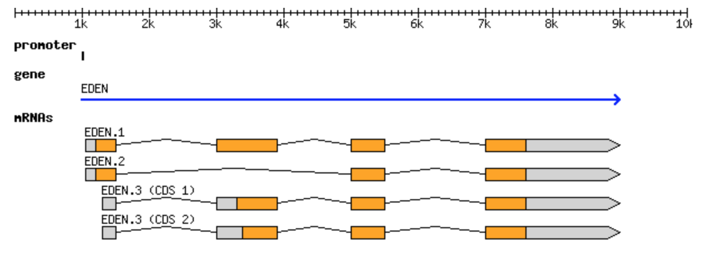

GFF3 and GTF formats
For the full specification, see the GFF3 specification.
GFF3 (Generic Feature Format version 3) is a tab-delimited format for describing genomic features such as genes, transcripts, and exons, along with the relationships between them. It is one of the most common ways to distribute gene annotations.
Format
Each feature is described by nine tab-separated fields:
seqid — the name of the sequence (for example a chromosome) the feature is on.
source — the program or database that produced the feature.
type — the kind of feature (for example
gene,mRNA,exon).start — the 1-based start coordinate of the feature.
end — the end coordinate of the feature.
score — a numeric score for the feature, or
.if none.strand —
+,-, or.for unstranded.phase — for CDS features, where the next codon begins (0, 1, or 2); otherwise
..attributes — a semicolon-separated list of
tag=valuepairs. This is where identifiers and parent/child relationships are recorded using theIDandParenttags.
Example
The canonical example from the specification describes a gene named EDEN with three alternative transcripts:
##gff-version 3
ctg123 . gene 1000 9000 . + . ID=gene00001;Name=EDEN
ctg123 . mRNA 1050 9000 . + . ID=mRNA00001;Parent=gene00001;Name=EDEN.1
ctg123 . mRNA 1050 9000 . + . ID=mRNA00002;Parent=gene00001;Name=EDEN.2
ctg123 . mRNA 1300 9000 . + . ID=mRNA00003;Parent=gene00001;Name=EDEN.3
ctg123 . exon 1300 1500 . + . ID=exon00001;Parent=mRNA00003
ctg123 . exon 1050 1500 . + . ID=exon00002;Parent=mRNA00001,mRNA00002
ctg123 . exon 3000 3902 . + . ID=exon00003;Parent=mRNA00001,mRNA00003
ctg123 . exon 5000 5500 . + . ID=exon00004;Parent=mRNA00001,mRNA00002,mRNA00003
ctg123 . exon 7000 9000 . + . ID=exon00005;Parent=mRNA00001,mRNA00002,mRNA00003
ctg123 . CDS 1201 1500 . + 0 ID=cds00001;Parent=mRNA00001
ctg123 . CDS 3000 3902 . + 0 ID=cds00001;Parent=mRNA00001
ctg123 . CDS 5000 5500 . + 0 ID=cds00001;Parent=mRNA00001
ctg123 . CDS 7000 7600 . + 0 ID=cds00001;Parent=mRNA00001
The Parent attribute is what ties the features together: each exon
and CDS names the mRNA it belongs to, and each mRNA names its gene. This
lets a program reconstruct the full structure of the gene.
{kind=link}

The EDEN gene from the example above, drawn out as a gene model with three alternative transcripts. Source: GFF3 specification.
What about GTF?
You will often see the closely related GTF (Gene Transfer Format, also called GTF2). GTF and GFF3 are not the same format, but they are close relatives, and both are in wide use today. GTF shares the same nine tab-separated columns as GFF3, but differs in how the ninth (attributes) column is written and in how features are grouped:
GTF attributes use the form
key "value";(the value is quoted and each pair ends with a semicolon), whereas GFF3 useskey=valuepairs separated by semicolons.GTF groups features using
gene_idandtranscript_idattributes rather than the GFF3IDandParentscheme.
A GTF line looks like this:
ctg123 . exon 1300 1500 . + . gene_id "gene00001"; transcript_id "mRNA00003";
Which format you use is usually dictated by the tool: many RNA-seq tools expect GTF, while GFF3 is common for genome annotation. Reference annotations are frequently distributed in both.
Software that use GFF3 and GTF
Annotation files are used throughout transcriptomics and visualization:
TopHat — spliced alignment guided by a GTF/GFF annotation.
HTSeq — counting reads per feature.
IGV — visualizing features alongside alignments.
GBrowse and the UCSC Genome Browser — displaying annotations in a genome browser.